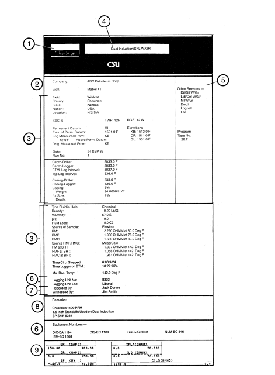
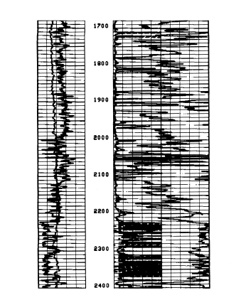
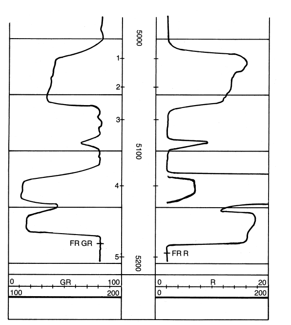

Reading Logs
Curves mean nothing until you can find depth, scale, and the mark that says the tool was on bottom. Learn the five parts of a print before any resistivity or porosity theory.
Learning goals
- Name the five parts: header, main log, inserts, repeat section, calibrations.
- Read a depth on the 1-in., 2-in., and 5-in. scales and say what each scale is for.
- Read a linear track, a backup curve, a backwards porosity scale, and a log cycle.
- Use the FR mark, the repeat section, and the before/after calibration the way a witness would.
Before the physics of each curve, learn the page. A standard print has five parts: the header, the main log section, the inserts, the repeat section, and the calibrations.
The header
The block of text at the top is the heading. It holds facts the curves do not:
- Logging company
- Operating company (the operator)
- Well identity: name or number, lease or field, legal location, ground elevation and usually the rig floor or kelly bushing, the date, total depth when the log was run, mud properties, bit size, casing size and depth
- Type of log
- Other logs or surveys on the same well
- Equipment: tool serial numbers, spacings, truck number, and the office that sent the truck
- People: who recorded it, and who witnessed it (the company man)
- Remarks: anything odd on the job
- Scales, and which line is which curve

Rule one: read the header before you interpret. Confirm the well. Then log type, mud (resistivity, water loss, weight, viscosity), bit size, casing depth, and total depth. Read the remarks. Note which company ran the job. Shops are not equally careful, and that changes how hard you lean on the numbers.
Main log section
Under the header is the long graph: what the tools sent up the cable. You read depth on the vertical axis and the measurement on the horizontal axis.
Vertical scale
Depth is linear, like a ruler. The depth track sits near the middle, with a number every 100 ft on the depth lines. Common scales are 1, 2, or 5 inches per 100 ft. On a 2-in. log, 1600 to 1700 ft is 2 inches of paper. On a 5-in. log that same 100 ft is 5 inches.
The 1-in. and 2-in. scales also mark 50 ft and 10 ft. A depth that falls between lines (1738 ft) is estimated by eye. A 5-in. log adds light 2-ft lines, so you can read to about half a foot.
The 1-in. and 2-in. scales are correlation scales. Geologists use them to compare wells over long intervals. Two inches per 100 ft is the usual scale for one or two nearby offsets. One inch per 100 ft is for cross-sections that cover miles of ground and thousands of feet of rock. Five inches per 100 ft is the detail scale: the plot is stretched, so thin features show. Super-detail scales (10 or 25 in. per 100 ft) are mostly for micrologs and fracture-identification logs, and only over a short piece of hole.
Left of the depth track is track 1, often called the SP or GR track because spontaneous potential and gamma ray usually live there. Right of the depth track are track 2 and track 3, for resistivity, porosity, sonic velocity, and similar curves.

Horizontal scale
Each track is divided, and each curve is labeled at the bottom with a line style and its own numbers.
Example: a GR curve in track 1 runs from 0 at the left (division 0) to 100 at the right (division 10). Ten divisions cover 100 API-style units, so one division is 10. Four divisions from the left is 40.
A resistivity curve in track 2 might run 0 to 20, so each division is 2. If the curve leaves the right edge, a heavier backup (often one-tenth the sensitivity, 0 to 200) continues it. The right edge of track 2 is the left edge of track 3. Some curves cross both tracks. Others stop at division 10.
At the bottom of a curve, a short tick marked FR (first reading)—FR GR, FR R—is the last valid sample. Do not read below it. The tool is sitting on bottom and is not measuring. FR R can be deeper than FR GR because the gamma-ray detector was higher on the tool string and could not reach as far.
When a curve spans tracks 2 and 3, count divisions across both. A bulk-density curve (RHOB) from 2.0 at the left of track 2 to 3.0 at the right of track 3 covers 1.0 g/cm³ in 20 divisions, so each division is 0.05. Some porosity curves (PHIN) run backwards: high on the left, low or negative on the right. A minus sign on “units per division” means the numbers grow from right to left. Zero porosity then sits in the middle of the track, not on the left edge.
Track 1 is always linear. Tracks 2 and 3 may be linear, both logarithmic, or split (track 2 logarithmic, track 3 linear).
A logarithmic scale is built on powers of ten. Each cycle is ten times the one before it—like 1¢ to 10¢, then 10¢ to $1, then $1 to $10. A wide range fits in a narrow track. Resistivity presentations (a dual induction–SFL, for example) are often drawn this way. The scale may start at 0.2 rather than 0.1. The idea is the same: to read a point between grid lines, add the contribution of each cycle, the way 500 + 20 + 5 is 525.
Another common layout puts depth on the far left and four tracks to the right. That is typical of a computed log, which a computer builds by combining two or more measurements.

Inserts
Between major sections, and again at the end, an insert names every curve and gives its scale. Lines may be solid, long-dashed, short-dashed, or dotted, and heavy or light.
A typical insert might show, in track 1, GR as a heavy solid line from 0 to 150 and SP as a dashed line from −160 to +40 (20 units per division). In track 2, SFLA solid and ILD dashed, both 0 to 50 ohm-m. A conductivity curve (CILD) may cross tracks 2 and 3, solid, scaled 1000 to 0 millimhos. Ignore the alphabet soup for now. Each row is a name plus a line code so you can find that pen on the graph.
The insert is repeated when the presentation changes from the 2-in. scale to the 5-in. scale, because extra curves may appear and tracks 2 and 3 may switch to logarithmic.
Repeat section
The repeat section is the same interval logged at least twice. Lay it beside the main log and compare several depths. If they disagree, rerun with different tools. If you cannot, treat the log with caution.
Radioactive curves always fidget a little, because decay is random. Resistivity and sonic curves should repeat closely. The repeat section is attached below the main log.
Calibrations
The last section is the before-and-after calibration. It shows the tools were set before the run and still inside tolerance at the end. For an ordinary read, assume they were. If you suspect drift, call the logging company, ask about the procedure, and have them show both checks.
Once you can name the five parts and read a depth and a curve value, you are ready for what the curves mean.
Key terms
- Header
- The text block: well, mud, tools, people, scales.
- Correlation scale
- 1 or 2 in. per 100 ft, for comparing wells.
- Detail scale
- 5 in. per 100 ft, stretched so thin beds show.
- Track 1 / 2 / 3
- Left track (usually SP or GR); two tracks to the right of depth.
- Backup curve
- A second, coarser scale that continues a curve off the track.
- FR
- First reading. Do not read the curve below this tick.
- Insert
- Legend of curve name, line style, and scale.
- Repeat section
- The same interval logged twice, to check the tools.